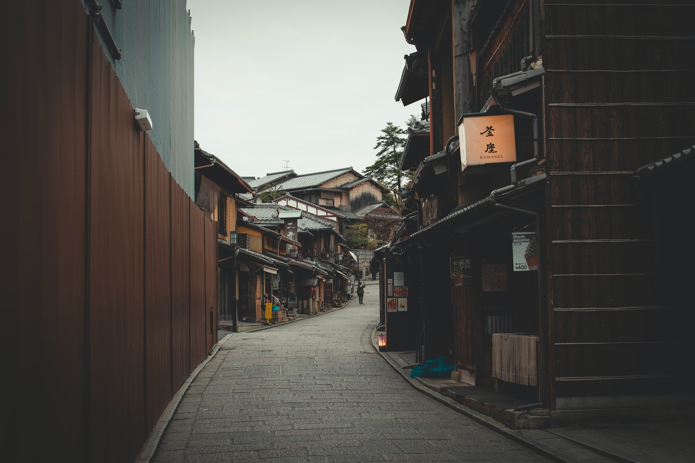

Japón
Japón es un destino turístico popular por su combinación única de antigua tradición y tecnología avanzada. Tokyo es una metrópolis vibrante con una vibrante vida nocturna y una amplia variedad de opciones de compras y entretenimiento. Kyoto, por otro lado, es conocida por sus templos antiguos y jardines tradicionales. También es un destino popular para los amantes de la naturaleza, con hermosos paisajes de montañas y bosques.
